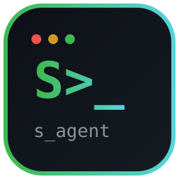

s_agentA fast, hands-on coding agent for your terminal. It reads your codebase, edits files, runs commands and tests, drives a real browser, controls desktop apps, and verifies its own work.
Everything a coding agent needs — nothing it doesn't.
Pure-stdlib core, zero required dependencies, ~20 MB RAM. Independent tool batches run in parallel.
Built-in local engine works with no API key. Plug in OpenAI, Gemini, DeepSeek, Ollama & more when you want.
Playwright, Firefox-first: open · text · click · fill · screenshot on live pages.
PyAutoGUI with FAILSAFE: screenshot · click · type · hotkey · locate.
Split a goal across parallel agents — architecture, bugs, tests, docs — then merge.
Blocked destructive targets, confirmation prompts, /diff review before you trust it.
Two minutes, Windows / macOS / Linux.
git clone https://github.com/salim-studio/s_agent.git cd s_agent pip install -e ".[full]" # core + browser & desktop python -m playwright install firefox python -m s_agent doctor
Interactive, one-shot, or swarm.
python -m s_agent # interactive session python -m s_agent run "find the main function" --yes python -m s_agent swarm "review this project" --yes python -m s_agent browser open --url https://example.com python -m s_agent desktop screenshot
| Command | What it does |
|---|---|
run "task" | Run a single task, report with evidence |
swarm "goal" | Parallel agents, merged result |
browser … | Real-browser automation (status/open/text/click/fill/screenshot/close) |
desktop … | Desktop automation (status/screenshot/click/type/hotkey/locate/…) |
login · sessions · doctor | Providers, history, health check |
A tight loop, every turn.